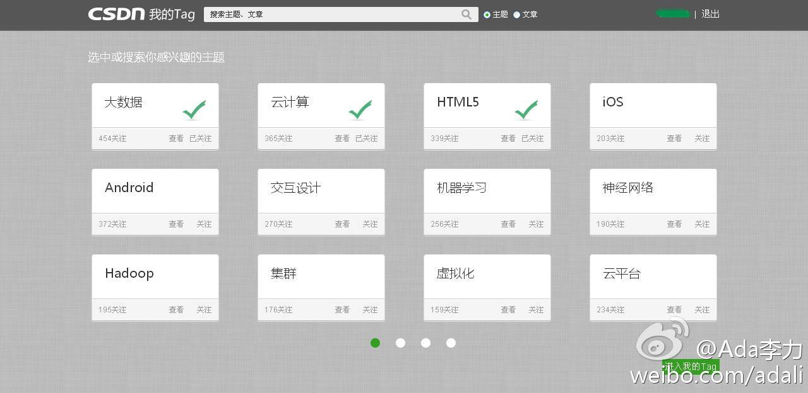

接地气就是媒体引入草根观点，让社区用户深度参与。//@钛媒体:魏武挥：互联网圈内动辄说要接地气，其实很多人忘记了这样一点：不够大气只接地气，那只是赚卖白菜的钱而已。媒体的转型，两气都必须有。既要高端大气上档次，又要接地气。具体到操作层面，就是“长文”+“碎片化讨论”。@钛媒体APP:【媒体的社区化演进——高大上如何接地气】@魏武挥 ：互联网圈内动辄说要接地气，其实很多人忘记了这样一点：不够大气只接地气，那只是赚卖白菜的钱而已。这个说法，沿用到媒体上，尤其适用。媒体的转型，两气都必须有。钛媒体就是“高大上”和与“人”接地气上开始进行新尝试。 网页链接
我也听说这么一件事情：某公司每到业绩好的月份，财务系统就出故障，就会崩溃，后来调查来调查去，发现是由于利润率太高，存利润率的那个字段容纳太小的缘故。@朱龙春_小四科技:以前听说的真实故事： 话说某大型ERP系统出现生产数据丢失的重大事故，最后不同厂商的各路“大师”调查来，“讨论”去，得出结论：由于ERP数据量太大，把服务器的网卡“击穿”了造成了这次事故。。。
#社区运营# 社区里首要的就是人的存在，用户中心是是核心要件。如何在网站中凸显出“人”，有两种路径：认证体系，比如微博里的v字用户。第二种方法来自于数据挖掘和分析，记录用户的行为：浏览、讨论、ta的社交网络，由技术驱动来凸显用户。 网页链接
#社区运营# 媒体之道，有PGC（专业生产内容）、UGC（用户生产内容）、CGC（算法生产内容）三种，后来我慢慢意识到，应该是一条路径的三个阶段。 没有PGC打底，不能聚拢大量的阅读者，从而无法产生能够GC的U，没有众包式的UGC而产生大量的内容与人，CGC便毫无意义。 网页链接
容易做的是PGC, 这是第一阶段，也是媒体最善长的；#社区运营#关注的是UGC, 抓住少数的核心用户，让核心用户带动更多的人；而到了CGC阶段, 则是拼技术实力了。@Ada李力:#社区运营# 媒体之道，有PGC（专业生产内容）、UGC（用户生产内容）、CGC（算法生产内容）三种，后来我慢慢意识到，应该是一条路径的三个阶段。 没有PGC打底，不能聚拢大量的阅读者，从而无法产生能够GC的U，没有众包式的UGC而产生大量的内容与人，CGC便毫无意义。 网页链接
CSDN用户在访问网站的博客、社区、下载等服务时，经常会看到“请您添加标签”的提示。也许很多人对此抱有疑问：加标签有什么用？CSDN标签，也称为Tag，添加Tag有三大好处：更快检索、更精准展示、更有效传播与反馈。 网页链接 
每个Tag页，都实际变成了一个minisite, 而怎么通过minisite吸引用户，引导用户，以及留住用户，则是#社区运营#人员需要考虑。@Ada李力:CSDN用户在访问网站的博客、社区、下载等服务时，经常会看到“请您添加标签”的提示。也许很多人对此抱有疑问：加标签有什么用？CSDN标签，也称为Tag，添加Tag有三大好处：更快检索、更精准展示、更有效传播与反馈。 网页链接
#社区运营#运营Tag页需要这么一个指导，“从零开始，建立一个有活跃用户进行贡献参与的在线社区”。- 看来我得写这么一个文档了。@Ada李力:CSDN用户在访问网站的博客、社区、下载等服务时，经常会看到“请您添加标签”的提示。也许很多人对此抱有疑问：加标签有什么用？CSDN标签，也称为Tag，添加Tag有三大好处：更快检索、更精准展示、更有效传播与反馈。 网页链接
回复@天行健中国元素:已经让客服帮您处理了。我们对CSDN上的博客专家，论坛版主，以及IT达人的投诉侵权，会建立快速相应通道，名单整理中。 //@天行健中国元素:回复@Ada李力:当然，有很多方式，比如我这本书里写了作者的联系邮箱，我用作者联系邮箱向网站发邮件说明情况，也应该清理比较合适---:抱歉，由于作者设置，你暂时没有这条微博的查看权限哦。查看帮助： 网页链接